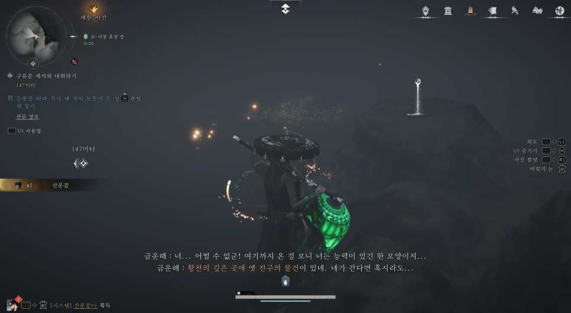

2. 산문갑
- 노인이 있던 장소에서 오른쪽으로 나갑니다.
- 등이 달려 있는 건물이 보이면, 그 위치에서 다시 오른쪽으로 쭉 이동합니다.
- 길을 따라가다 보면 NPC '금운해'를 만날 수 있습니다.
- 이후 나타나는 비급 표시를 따라 움직이면 획득 가능합니다.


독기를 피해 살아남는 필수 생존 가이드
귀문 시장은 독기로 인해 맨몸으로는 자유롭게 돌아다닐 수 없습니다.
이를 해결하기 위해서는 '음병 갑옷'을 제작해야 합니다.
빠른 시간 내에 움직여야 하는 타임 어택 성격의 퀘스트입니다.
아래 공략을 미리 숙지하고 진입하는 것을 추천합니다.
시장이 열리지 않는 시간에 귀문 시장에 진입하면 한 노인을 만날 수 있습니다.
노인은 갑옷 제작 재료인 철창, 산문갑, 투구 세 가지를 찾아오라고 합니다.
가장 찾기 쉽습니다. 노인이 있던 장소에서 왼쪽으로 가다 보면 비급 표시가 바로 뜹니다.
해당 표시를 따라가서 획득하세요.
세 가지 물건을 모두 모아 노인에게 전달하면 음병 갑옷을 제작해 줍니다.
이제부터는 독기 걱정 없이 귀문 시장을 자유롭게 돌아다닐 수 있습니다.
갑옷 획득 후 음병을 따라가는 퀘스트가 이어집니다.
아까 올라갔던 계단에서 왼쪽으로 가지 말고, 계속 위로 쭉 직진해야 합니다.